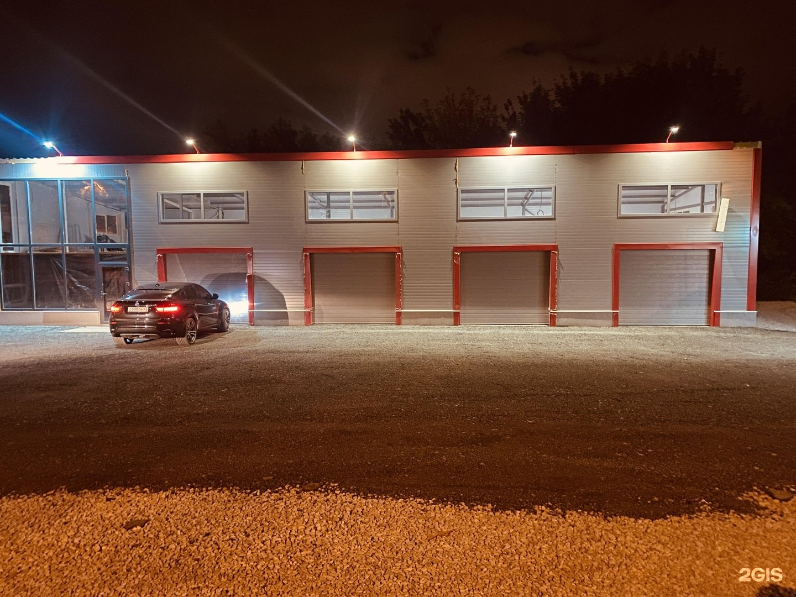

Посетители отмечают оперативность ремонта и доставки нужной детали.
Читать в 2ГИСАвтосервис · Самара
ЦАРЁВ.
Обслуживание и ремонт легковых автомобилей.
Кировский район
Уточните часы по телефону★ 5.0 в 2ГИС

ЦАРЁВ / Самара
Фасад мастерской вечером
Самара, Ташкентский переулок, 68Найти свою услугу
Услуги и цены
Точная работа.
Понятный выбор.
От обслуживания до ремонта — найдите нужную работу в прайсе.
Прайс в 2ГИСЗамена масла в двигателе
3
Замена со снятием защиты
Со снятием защиты
Замена без снятия защиты
Без снятия защиты
Замена с промывкой масляной системы
С промывкой масленной системы
Свечи зажигания
5
4 цилиндра
4 цилиндра
4 цилиндра, со снятием впускного коллектора
4 цилиндра; со снятием впускного коллектора
V-образный двигатель, 6 цилиндров
V-образный; 6 цилиндров
Рядный двигатель, 6 цилиндров
Рядный; 6 цилиндров
V-образный двигатель, 6–8 цилиндров, со снятием впускного коллектора
V-образный; 6–8 цилиндров; со снятием впускного коллектора
Замена масла в АКПП
2
Частичная замена жидкости ATF
Частичная замена
Полная аппаратная замена ATF
Аппаратная полная замена
Тормозная система
6
Дисковые колодки без профилактики
Без профилактики
Дисковые колодки с профилактикой суппортов
С профилактикой супортов
Задние барабанные колодки
Задние; барабанного типа
Передние диски и колодки
Передние диски + колодки
Задние диски, колодки и профилактика
Задние диски + колодки + профилактика
Замена тормозной жидкости
Замена ремня ГРМ
8
4 цилиндра, 8 клапанов
4 цилиндра; 8 клапанов
ВАЗ, 8 клапанов
ВАЗ; 8 клапанов
ВАЗ, 16 клапанов, кондиционер и помпа
ВАЗ; 16 клапанов + кондиц. + помпа
Largus, мотор ВАЗ, 16 клапанов и помпа
Ларгус; ВАЗ мотор; 16 кл. + помпа
VESTA DFP, 1600 см, 16 клапанов и помпа
VESTA DFP; 1600 см; 16 кл. + помпа
VESTA, 16 клапанов, 1800 см объём и помпа
VESTA; 16 кл.; 1800 см. объём + помпа
Иномарки, 4 цилиндра, 16 клапанов и помпа
Иномарки; 4 цилиндра; 16 кл. + помпа
V-образный двигатель, 6–8 цилиндров
V-образный; 6–8 цилиндров
Обслуживание кондиционера
6
Заправка фреоном
Опрессовка системы
Заправка краски в систему, краска и полный процесс рекуперации
Краска + полный процесс рекурпирации
Рекуперация системы
Промывка радиаторов без снятия
Без снятия
Промывка радиатора и полный процесс рекуперации, полная разборка кассеты радиаторов
Полный процесс рекуперации + полная разборка кассеты радиаторов
Замена масла в вариаторе
2
Частичная замена CVTF, сервисный объём
Частичная; сервисный объём
Замена полного объёма CVTF
Полный объём
Ходовая часть
10
Замена одной стойки стабилизатора
Замена втулок стабилизатора
Снятие и установка рычага
Замена сайлентблока на снятом рычаге, 1 шт.
На снятом рычаге
Замена переднего подшипника ступицы
Передний
Замена переднего амортизатора
Передний
Замена рулевого наконечника
Замена рулевой тяги с пыльником
С пыльником
Замена шпильки колеса
Замена рейки с подрамником
С подрамником
Раздаточная коробка
1
Полная замена
Полная замена
Передний редуктор
1
Замена
Передний редуктор
Задний редуктор
1
Полная замена
Задний мост; полная замена
Свечи накаливания · дизель
3
4 цилиндра
Дизель; 4 цилиндра
Рядный мотор, 6 цилиндров
Дизель; рядный; 6 цилиндров
V-образный мотор, 6–8 цилиндров
Дизель; V-образный; 6–8 цилиндров
Замена масла ГУР
2
Обычная замена
Обычная замена
Замена с промывкой
С промывкой
Другие работы
1
Компьютерная диагностика автомобиля
По этому запросу услуг не найдено. Попробуйте другое название или позвоните нам.
Прайс обновлён 05.11.2026. «От» — минимальная стоимость. Итог зависит от автомобиля и состава работ. Цены не являются публичной офертой; уточните стоимость и расходные материалы по телефону.
Мастерская
Сервис в кадре.
Мнения посетителей
О сервисе —
из первых рук.
Пересказываем опыт посетителей без имён. Полные отзывы — на картах.
За что хвалят
В отзывах хвалят решение проблемы без предложения ненужных работ.
Читать в 2ГИСПосетителю было удобно заказать детали на месте и дождаться ремонта.
Читать в 2ГИСПосетитель рассказал, что при ремонте обнаружили неисправность тормозного шланга и устранили её после быстрой доставки детали.
Отзыв в 2ГИСДругой посетитель отметил быстрое решение проблемы и отсутствие лишних предложений.
Отзыв в 2ГИСВ одном отзыве посетитель сообщил, что запись сначала не нашли, а после показа переписки приняли. Работу выполнили быстро, но письменного результата диагностики и места ожидания ему не хватило.
Отзыв на Яндекс КартахНа связи и на карте
До встречи
в мастерской.
| Понедельник | 09:00–19:00 |
|---|---|
| Вторник | 09:00–19:00 |
| Среда | 09:00–19:00 |
| Четверг | 09:00–19:00 |
| Пятница | 09:00–19:00 |
| Суббота | Выходной |
| Воскресенье | Выходной |
Время Самары. Часы в праздники уточняйте по телефону.
Начнём с разговора
Что нужно
вашему автомобилю?
Уточните стоимость и удобное время для визита по телефону.
Позвонить в сервис